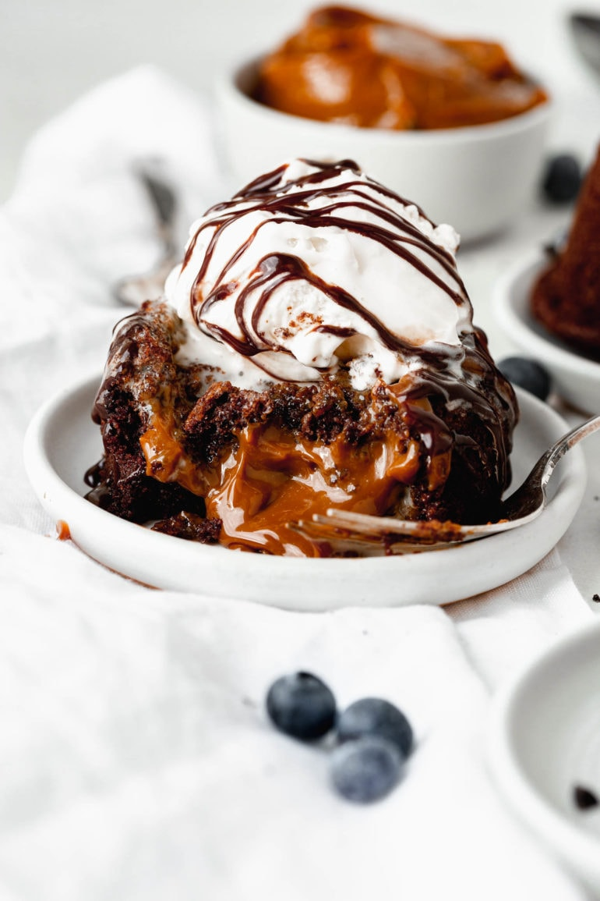
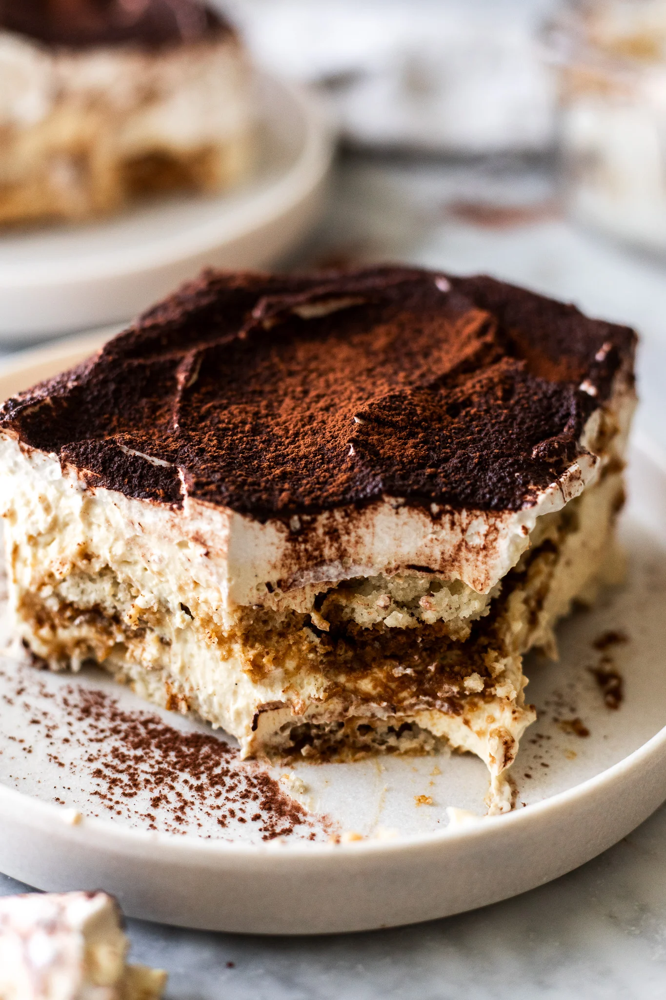

Lava Cake
A rich chocolate cake with a molten center.

Tiramisu
A classic Italian dessert with layers of coffee-soaked ladyfingers and
mascarpone cream.

Cheesecake
A creamy and smooth cheesecake with a graham cracker crust, topped
with fruit or chocolate.